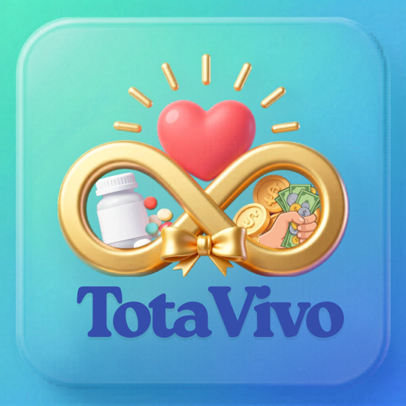

❤️∞
TotaVivo Life Companion
The everyday companion for communication, medications, safety, finances, smart-home access, family support, accessibility, and independence.
Open Life Companion
Protection, independence, connection, and opportunity.
One family of Tota products. Each module can stand alone, while sharing a consistent identity, accessibility standard, privacy approach, and trusted home base.
The everyday companion for communication, medications, safety, finances, smart-home access, family support, accessibility, and independence.
Open Life CompanionThe Tota trading and market-intelligence module. It remains separate from personal-care data while sharing the Tota Group navigation and brand system.
Open TotaSignalA reserved home for future opt-in services that protect, cover, assist, or support members without overcrowding the Life Companion.
View architecture